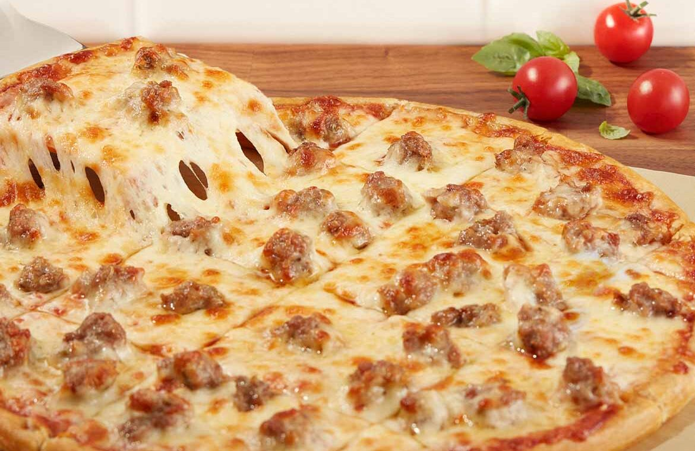
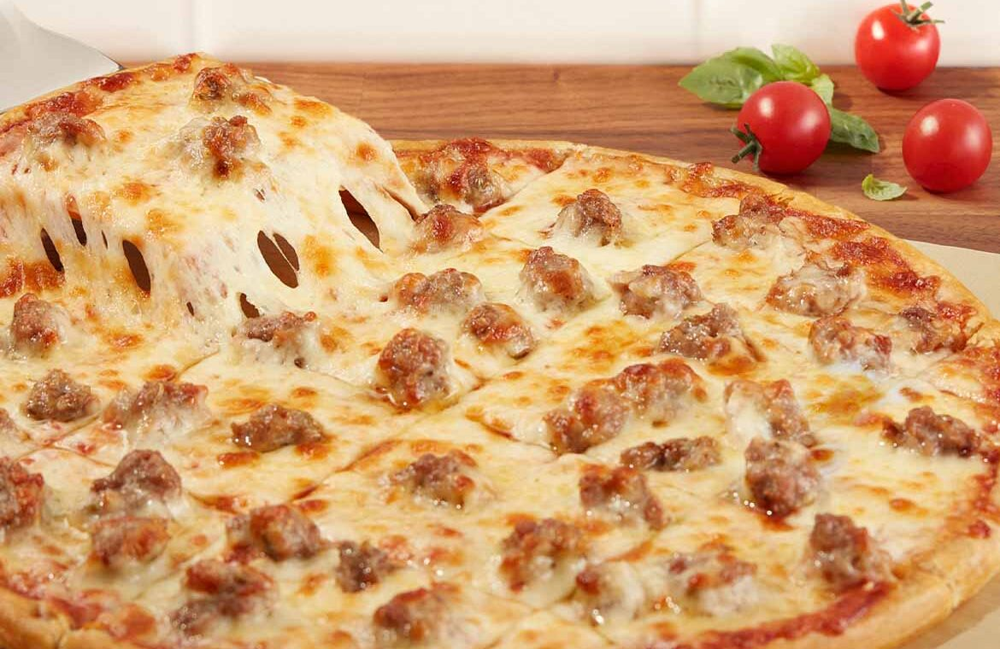

Ido's HTML 1 Lab
About Me
My name is Ido Kirson. I am from Cambridge, Massachusetts; I have lived here my whole life. I went to Graham & Parks for elementary school, VLUS for middle school, and now I go to CRLS
As for my hobbies, I like to be outdoors. Sometimes I bike, sometimes I hike, and sometimes I ski. I like to bike westward to towns like Lincoln and Weston, and hike + ski in New Hampshire.
Career Aspirations
I would like to pursure a career in math/statistics. I want to go to Williams College and study one of those two. CS 2 should help me because statistics is very programming heavy, and I will need to work on my coding skills. I wouldn't mind being on the data science side of statistics, as I am intrigued by the AI revolution.
Favorite Foods
- Cheesecakeüç∞
- Pizzaüçï
- Burritos (no beans)üåØ
 


Hobbies
- Biking
- Skiing
- Hiking